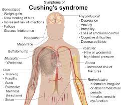

Cushing diseasesyndrome

SYMPTOMS:
Cushing disease/syndrome can change your appearance. Signs include:
- Round, red face
-
Hump on back of neck
-
Purple stretch marks, especially on the chest, armpits and belly
-
Skin changes, such as acne, excessive facial hair and easy bruising
-
Unusual, rapid weight gain, especially around the belly
Complications can include:
- Muscle weakness
-
Vision problems
-
Headaches
-
Infections
-
Osteoporosis, a condition that causes weak, brittle bones and bone loss
-
High blood pressure
-
High blood sugar or diabetes
-
Extreme fatigue or trouble sleeping
-
Depression
-
Memory loss
-
In women, loss of periods (amenorrhea), and male-pattern face and body hair (hirsutism)
-
In men, trouble getting an erection
CAUSES
- Cushing disease occurs when a pituitary adenoma, a noncancerous (benign) tumor on the pea-size pituitary gland, makes too much adrenocorticotropic hormone (ACTH).
-
In response, the body’s two adrenal glands, one atop each kidney, make too much cortisol. This causes problems with your body’s hormone balance.
-
Only about 10% of pituitary adenomas make too much ACTH. The tumor can also be small (microadenoma) or large (macroadenoma).
DIAGNOSIS
- Blood tests: We can measure the levels of ACTH and cortisol in your blood. We take a blood sample in the morning because hormone levels change throughout the day.
-
Urine tests: We can measure cortisol in your urine. We may ask for multiple samples. Ask your doctor if any of your current medications could affect results.
-
Late-night saliva test: We look at cortisol in your saliva. You’ll collect several samples just before midnight, when cortisol usually drops to its lowest level. A high level can indicate Cushing disease/syndrome.
-
MRI: This scan can help us see a pituitary tumor, including its size and location. If you’ve had an MRI before coming to us, we’ll recommend a new one only if the other scan was inconclusive. Sometimes pituitary tumors aren’t visible.
-
Abdominal CT scan: We’ll recommend this scan only if we think it’s possible you have an adrenal tumor. The scan can show a tumor, some of its features, and which side it’s on.